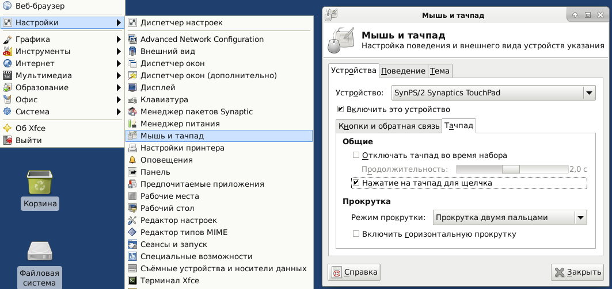
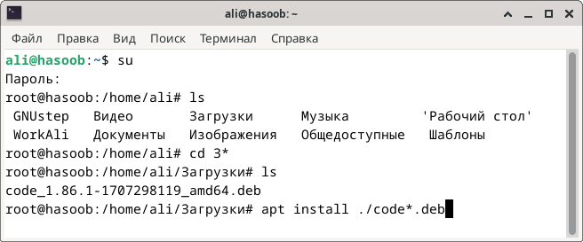
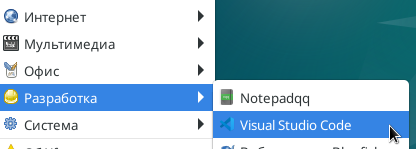
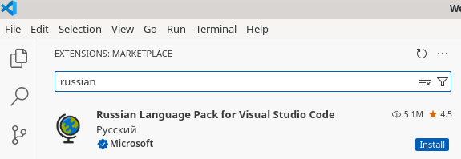
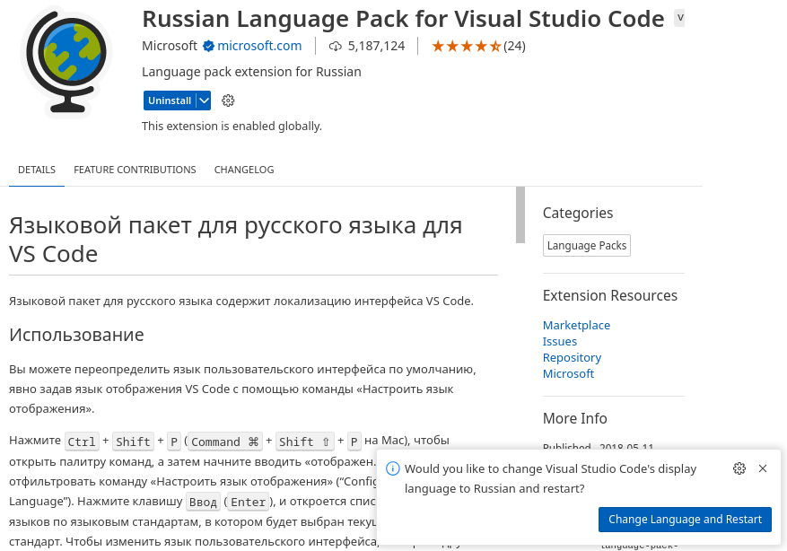
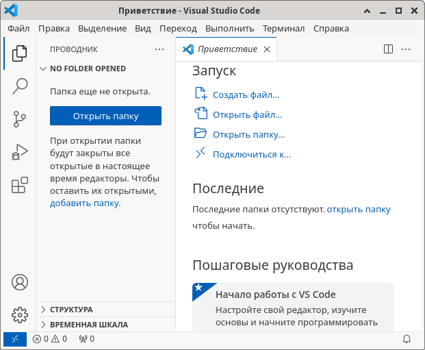

Мусульманин
Информационные технологии
بسم الله الرحمن الرحيم
Cвободное програмное обеспечение
Хвала Аллаху, Он милостив. Всех благ не сосчитать.
Из современных милостей Всевышнего к людям техника, компьютеры,
смартфоны и планшеты, международная сеть интернет и свободное програмное обеспечение.
Можно бесплатно скачать, установить и пользоваться операционной системой GNU Linux Debian,
набором офисных программ LibreOffice, средой разработки и написания кода NetBeans и многими другими программами.
Аллах щедр и заботится о нуждах всех. Он привёл людей к этому. Хвала Ему, Щедрому, Милостивому!
См. также:
11 рамадана 1444 года.
Использование apt в Linux Debian
apt - это менеджер пакетов для командной строки свободной операционной системы GNU Linux Debian. Он предоставляет возможность искать и управлять пакетами, устанавливать и удалять их.
Вначале в командной стоке BASH после слова apt вводят параметры, а потом команду.
Необходимо находиться в режиме суперпользователя.
Например, чтобы установить git я напечатал:
apt install git
в терминале и нажал клавишу Enter.
Основные команды apt и их значения:
- update - обновляет список доступных пакетов
- install - устанавливает новые пакеты
- search - ищет в описаниях пакетов
- show - показывает дополнительные данные о пакете
- reinstall - переустанавливает пакеты
- remove - удаление пакетов
- autoremove - автоматическое удаление всех неиспользуемых пакетов
- list - показывает список пакетов на основе указанных имён
- upgrade - обновляет систему устанавливая и обновляя пакеты
- full-upgrade - обновляет систему удаляя, устанавливая или обновляя пакеты
- edit-sources - редактирует файл с источниками пакетов
Добавлено 7-e января 2025 года, во вторник, в ночь, что перед днём.
Не работает щелчок касанием Тачпада (TouchPad) в Debian.
Решено
Вначале установите:
apt install xserver-xorg-input-synaptics xserver-xorg-input-multitouch
Потом перегрузите компьютер.
Затем зайдите в меню приложений и отметьте в новой появившейся вкладке Тачпад то, что вам надо.

Из всех решений это было самое быстрое. И было реализовано в Debian GNU/Linux 10 (buster) в окружении рабочего стола XFCE 4.12.
А чтобы узнать название и версию операционной системы и ядра можно использовать команду hostnamectl .
20 сентября 2022 года, вторник
Публикация в интернете
Уже лет двадцать размещаю свои небольшие материалы в интернете на страницах своих различных сайтов.
Хорошо любительски, но не отлично знаю HTML, CSS и немного ознакомлен с серверными технологиями.
Это добротный хостинг
Уже много лет пользуюсь различными услугами ООО «Бегет»,
такими как хостинг, регистрация доменов и недавно стал арендовать виртуальный сервер.
До этого и параллельно этому пользовался и сейчас немного пользуюсь другими хостингами.
Но на Бегете нравится больше, в том числе поэтому и рекомендую.
27 ноября 2024 года, среда
بسم الله الرحمن الرحيم
Во имя Аллаха Милостивого.
Как выключить компьютер с операционной системой Debian из Bash
Для выключения компьютера с операционной системой Debian выполните следующую команду с правами администратора:
systemctl poweroff
Эта команда запускает процесс завершения работы системы, останавливает все запущенные сервисы и отключает питание компьютера.
Другими способами описанными в инструкциях у меня не получалось.
Написано поздно вечером 30 сентября 2025 года. (рабиуль-ахир 1447 года от хиджры)
بسم الله الرحمن الرحيم
Во имя Аллаха Милостивого.
Установка и русификация Visual Studio Code в Debian
в 2024 году
Скачиваем с официального сайта Visual Studio Code файл для операционной системы
GNU Linux Debian
с расшитением .deb .
Запускаем Терминал и переходим в режим суперпользователя с помощью команды su .
Переходим в папку Загрузки с помощью команды cd .
Выводим содержимое папки с помощью команды ls .

Выводим содержимое папки с помощью команды apt install ./code*.deb , где звёздочка обозначает
любое продолжение названия файла, чтобы не писать полностью длинное имя файла, например
code_1.86.1-1707298119_amd64.deb.
Запускается процесс установки после которого появляется новый пункт в меню приложений
Разработка - Visual Studio Code .

Для русификации находим расширение Russian Language Pack for Visual Studio Code от компании
Microsoft и нажимаем кнопку Install.

Затем в сплывающем окошке нажимаем Change Language and Restart,
что означает "Сменить язык и перезагрузить" программу.

В результате программа после её перезагрузки будет русифицирована.

Программа Visual Studio Code довольно удобная и довольно шустрая даже на компьютерах 15-летней давности.
И вся хвала и слава Аллаху Хозяину всех миров!
Написано 12 февраля 2024 года, понедельник, а через месяц уже наступит
рамадан.
© Мусульманин 2026, (thepages.ru 2022-2025)